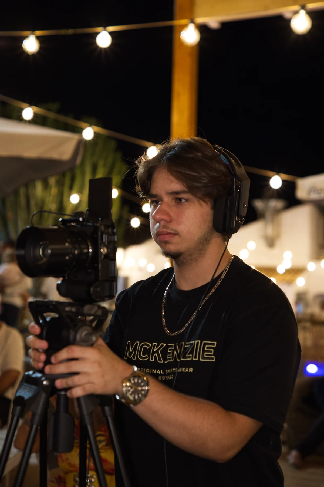
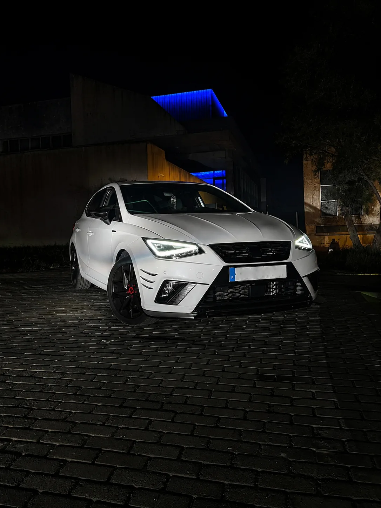
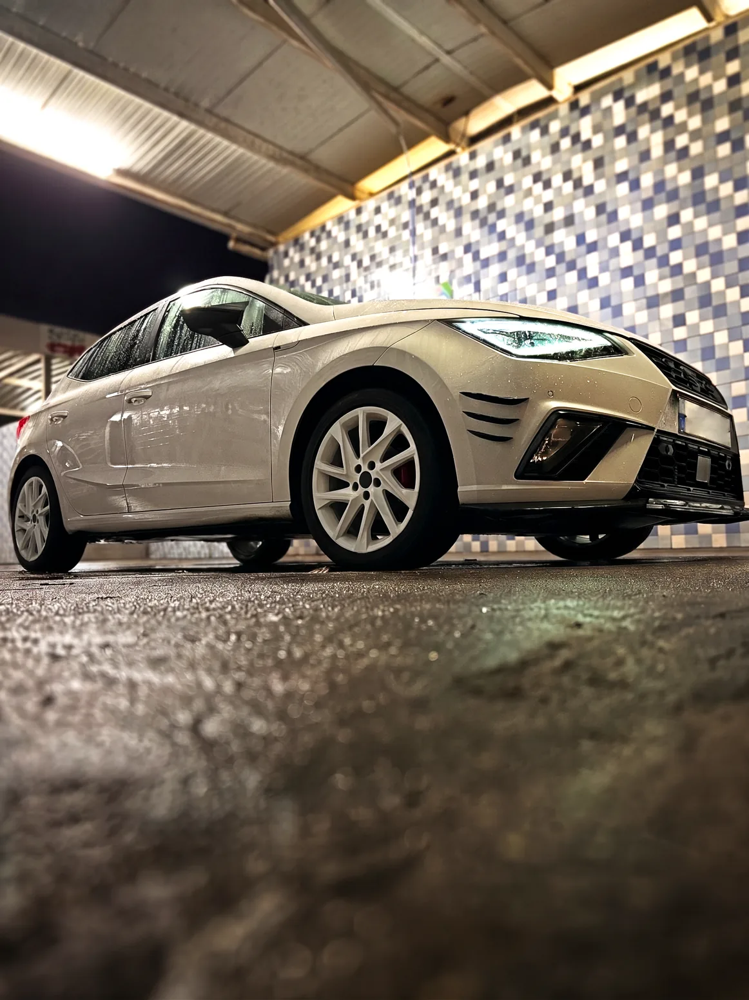

NÃO É SÓ
CONTEÚDO.
É SENSAÇÃO.
Transformamos ideias em imagens, movimento e som que não se limitam a ser vistos. Ficam contigo.

A LUZ MUDA
tudo.
Formas, reflexos, movimento e atitude. A imagem não serve apenas para mostrar. Serve para fazer sentir.

R / EDITORIAL 01LUMINANCE STUDY ↗FAZ O
FILME.

PERSPECTIVE STUDY ↗ESTUDOS VISUAIS COM FOTOGRAFIAS FORNECIDAS PARA O PROJETO · NÃO IDENTIFICADOS COMO TRABALHOS COMERCIAIS.
NÃO CRIAMOS
PARA encher ESPAÇO.
CRIAMOS PARA
DEIXAR MARCA.
Somos um estúdio criativo onde a fotografia, o vídeo e o som se encontram para dar forma ao que ainda não existe. Cada detalhe é uma escolha. Cada projeto, uma oportunidade de sentir algo novo.
CONHECE QUEM FAZ ACONTECER ↗TRÊS FORMAS.
INFINITAS IDEIAS.
A TUA VISÃO, A NOSSA LINGUAGEM. CRIAMOS EM DIFERENTES FORMATOS, COM A MESMA OBSESSÃO PELO DETALHE.
UMA IDEIA
de cada vez.
EXPLORAR TODOS OS CONCEITOS ↗Os trabalhos apresentados nesta fase são explorações visuais de demonstração, não projetos de clientes.
TALENTO COM
PERSONALIDADE.
A RISICCO É FEITA DE PESSOAS, VISÕES E REFERÊNCIAS DIFERENTES. DESCOBRE O UNIVERSO DE CADA UMA.
DA PRIMEIRA FAÍSCA
AO ÚLTIMO FRAME.
OUVIMOS.
Conhecemos a tua ideia, o objetivo e aquilo que queres fazer sentir.
IMAGINAMOS.
Desenhamos uma direção criativa com intenção e personalidade.
CRIAMOS.
Transformamos o conceito em fotografia, filme ou som.
ENTREGAMOS.
Ajustamos os detalhes e entregamos algo feito para durar.